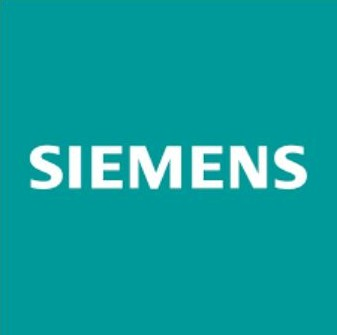
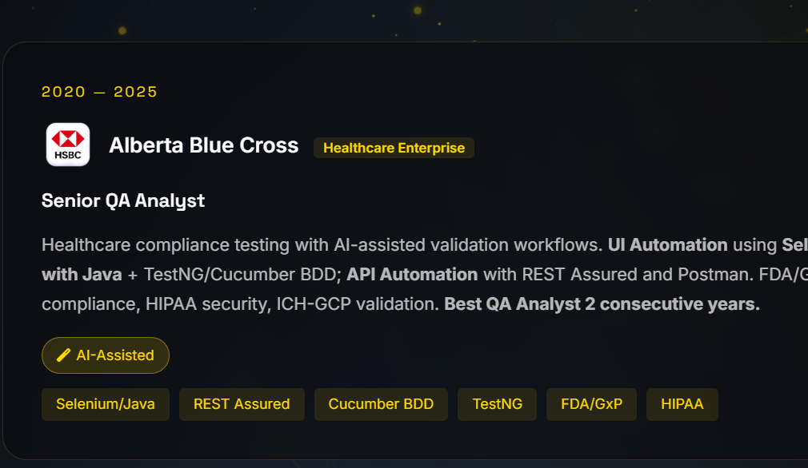
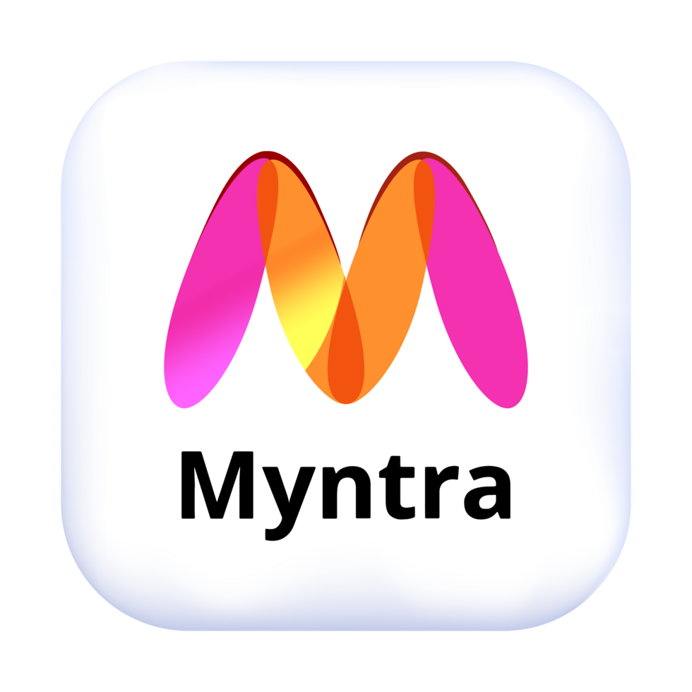

Senior QA Automation Engineer & AI Integration Specialist
Leveraging Claude AI, GitHub Copilot, and advanced LLMs to build intelligent test automation systems. 8+ years architecting enterprise-scale quality frameworks for startups to Fortune 500 companies like HSBC and Siemens.
Harnessing the power of Claude AI and GitHub Copilot to build a neural network-powered quality assurance system. Integrating LLM capabilities with enterprise automation for unprecedented testing efficiency and intelligent test generation.
Intelligent test case generation & requirements analysis
AI-assisted automation code & framework development
Predictive analytics & defect pattern recognition
Enterprise-grade quality engineering systems with AI integration
Self-healing frameworks with Claude AI & GitHub Copilot. Intelligent element detection using computer vision and AI-assisted code generation.
LLM-powered test generation with Claude, predictive defect analysis, and intelligent test prioritization using AI models.
Comprehensive API automation with REST Assured, GraphQL testing, and contract validation at enterprise scale.
GitOps-driven deployment with Azure DevOps, Jenkins, and GitHub Actions. AI-assisted pipeline optimization.
Load testing with JMeter, k6, and custom baselines. AI-predictive performance analytics.
Enterprise security for healthcare (FDA/GxP) and FinTech (PCI-DSS). AI-driven vulnerability detection.
Every project leverages Claude AI for requirements analysis, GitHub Copilot for code generation, and custom LLM integrations for intelligent test orchestration. From startups to Fortune 500 companies like HSBC and Siemens.
Everything related to software testing — all tools, all languages, all frameworks
Enterprise-scale quality engineering deployments with AI integration

Fortune 500 Enterprise System
Mission-critical operational analytics platform with Claude AI integration. AI-augmented test generation achieving 96%+ coverage with predictive defect analytics. GitHub Copilot accelerated development by 60%.
Healthcare Enterprise
FDA-compliant healthcare platform with AI-assisted validation. Claude AI for test case generation, automated case lifecycle workflows, HIPAA security protocols.

Fortune 500 FinTech
Banking-grade security testing for HSBC with AI-assisted threat detection. GitHub Copilot for rapid framework development, PCI-DSS compliance, OAuth/MFA validation.

Fashion E-Commerce Unicorn
End-to-end quality engineering for India's leading fashion e-commerce platform. Scaled testing from startup to unicorn status. Mobile app automation with Appium, cross-browser testing via BrowserStack, checkout and payment flow validation, catalog search, recommendation engine testing.
Career Journey: From early-stage startup projects to Fortune 500 enterprises. Proven track record at HSBC (Fortune 500 Bank) and Siemens (Global Technology Leader). Always available for team collaboration and overtime ready for critical releases.
Mission timeline: Startups to Fortune 500 enterprises
Leading AI-augmented quality engineering with Claude AI and GitHub Copilot. Architecting LLM-powered testing systems for operational analytics platform. End-to-end UI Automation with Playwright (Python) + Cypress (TypeScript); API Automation with REST Assured and PyTest. Parallel execution on BrowserStack and LambdaTest.
Healthcare compliance testing with AI-assisted validation workflows. UI Automation using Selenium with Java + TestNG/Cucumber BDD; API Automation with REST Assured and Postman. FDA/GxP compliance, HIPAA security, ICH-GCP validation. Best QA Analyst 2 consecutive years.
Banking systems automation with GitHub Copilot-assisted development. UI Automation: Selenium (Java) + Playwright; API Automation: Karate DSL + PyTest; Mobile Testing via BrowserStack + LambdaTest. PCI-DSS, OAuth/MFA, microservices validation. Certified Outstanding SDET.
E-commerce platform testing from startup phase to unicorn scale. UI Automation: Cypress (TypeScript) + Selenium; Mobile Automation: Appium (Android + iOS); API Testing: REST Assured + Postman; Cross-browser: BrowserStack + LambdaTest. Payment validation, catalog search, recommendation engine. Amazon Best QA Tester Award.
I'm Rahul — a Senior QA Automation Engineer specializing in AI-powered quality engineering. I leverage Claude AI, GitHub Copilot, and advanced LLMs to build self-evolving testing systems that learn and adapt.
My journey spans from startup projects to Fortune 500 companies like HSBC and Siemens. I'm always available for my team, overtime ready for critical releases, and committed to delivering top-notch quality in every project.
Ready to bring AI-powered quality engineering to your organization? Let's discuss how Claude AI and GitHub Copilot can transform your testing workflow. Always available for your team.
Message received. Expect response within 24 hours. Always available for follow-up.